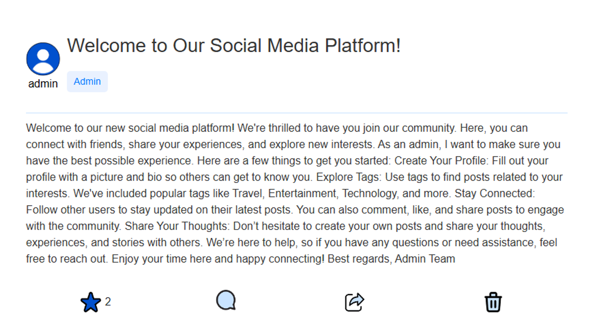
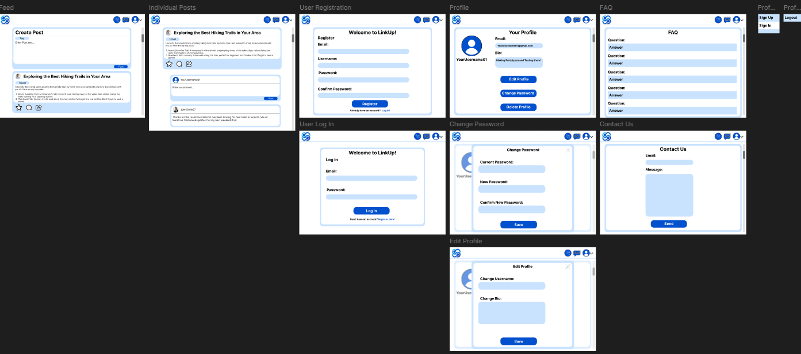

LinkUp is a social media platform where users can connect with others, share content, and participate in discussions. This project includes functionalities such as user registration, login, post creation, comments, likes, tags, user roles, and follower relationships.



Description
LinkUp is a full-featured social media platform designed to let users connect, interact, and share content in a modern, community-driven environment. Built with both usability and scalability in mind, the platform supports a wide range of social features to simulate a real-world online network. Users can register and log in securely, create and edit posts, comment on others' content, like and tag posts, and follow or be followed by other users. The system includes role-based access controls, enabling different permissions for admins, moderators, and regular users. All interactions are tracked and dynamically displayed through personalized feeds and profile pages, offering a seamless and engaging user experience.
Wireframes & Planning
Before beginning full development of LinkUp, a comprehensive set of wireframes was created to plan the user interface, flow, and feature layout. These wireframes helped visualize the core user journey from registration to daily use, ensuring clarity and consistency across all screens.
- Feed and Post Pages: A streamlined feed layout allows users to scroll through posts, interact with content via likes and comments, and view individual posts with dedicated comment sections.
- Authentication Flow: Registration and login pages are simple and accessible, guiding users through account creation and secure sign-in.
- User Profiles: Each profile includes email, bio, and account management options like editing, password changes, and account deletion, all wireframed for clear usability.
- Interactive Features: The FAQ and Contact pages provide support functionality, while a sticky header with quick-access icons ensures intuitive navigation.
- Modular Layouts: Reusable design components such as buttons, forms, and cards were outlined early on for consistency during development.
These wireframes served as a critical reference throughout the build process, making it easier to align UI decisions with functionality goals.

Challenges and Insights
One of the main challenges during development was working with PHP and managing the database. As it was my first time building a full platform with server-side functionality, I had to spend time practicing and improving my understanding of PHP and SQL interactions.
I encountered several issues, including problems with posts not saving correctly to the database and inconsistencies with user account data. Debugging these issues helped reinforce my backend skills and gave me a deeper understanding of how to build more reliable and secure web applications.